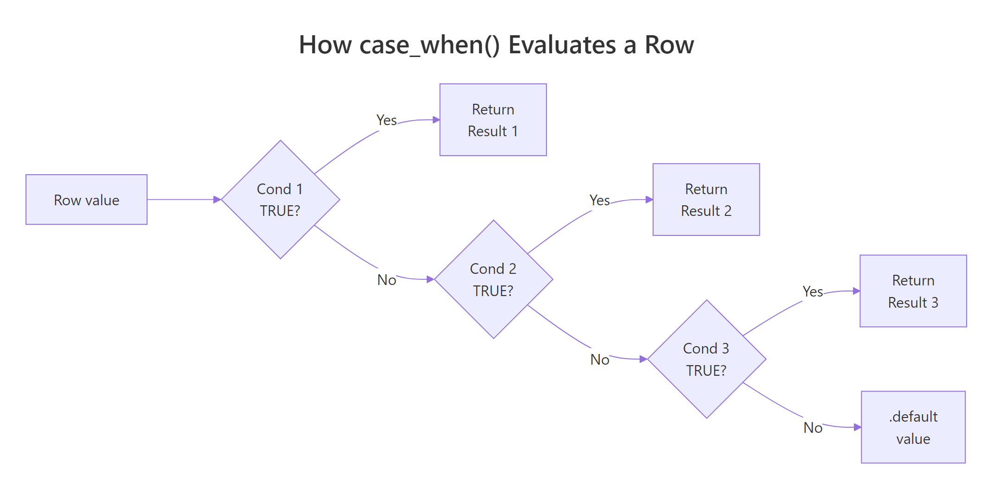
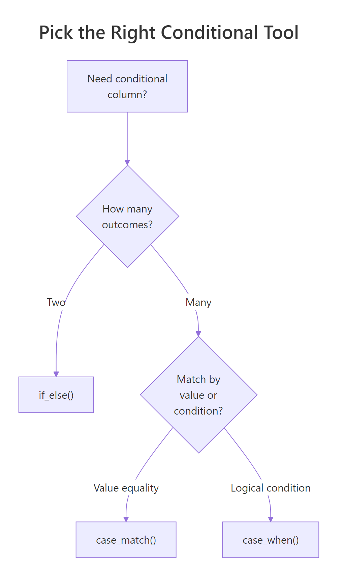

dplyr case_when() in R: Replace Nested if_else with Clean Conditional Logic
case_when() walks through a list of conditions top to bottom and returns the value of the first one that's TRUE — like SQL's CASE WHEN, fully vectorized over an entire column at once. It replaces nested if_else() chains with clean, readable conditional logic.
How does case_when() replace nested if_else()?
Picture a column of student scores you need to bucket into letter grades. Five thresholds, five outcomes. Written with nested if_else(), you end up with a tower of parentheses that is painful to read and worse to debug. case_when() flattens that mess into a single tidy block where every condition lines up next to its result.
Here is the same grading rule written both ways. The first version uses the nested approach. The second uses case_when() — notice how each rule sits on its own line and reads almost like English.
Both versions produce identical grades, but the case_when() block is what you would actually want to maintain six months from now. Adding a new threshold means inserting one line; reordering rules means swapping two lines. The nested version forces you to re-balance parentheses every time you touch it.
case_when() line is one condition paired with one outcome. Read top to bottom, the first TRUE wins, and the column is scored in one pass over the whole vector. There is no row loop and no branching tree to mentally simulate.Try it: Bucket the vector c(12, 45, 78, 33, 91) into "low" (under 30), "mid" (30–69), and "high" (70+). Use case_when() with .default.
Click to reveal solution
Explanation: Conditions are checked top to bottom. A value of 33 fails < 30 but matches < 70, so it gets "mid". Anything that falls through both rules takes the .default.
What is the basic case_when() syntax?
The function takes a sequence of two-sided formulas. The left side is a logical condition, the right side is the value to return when that condition is TRUE. Conditions are evaluated in order, and the first match wins for each row.

Figure 1: How case_when() walks through conditions top to bottom and returns on the first TRUE match.
Since dplyr 1.1.0, you can pass a .default argument to set the fallback value for rows that match no condition. Before 1.1.0, the idiom was a final TRUE ~ default_value line — TRUE always matches, so it acts as the catch-all.
The .default argument is the cleaner, more discoverable form. It also lets you skip the TRUE trick that always confuses newcomers ("why does TRUE go on the left?").
Both produce the same result. Use .default in new code; recognise TRUE ~ when you read older tutorials and packages.
.default and TRUE ~, unmatched rows get NA. That is sometimes what you want — for example, when you only care about flagging the rows that satisfy a positive rule and want to leave everything else blank.Try it: Rewrite the following legacy snippet to use the modern .default argument. The behaviour should be identical.
Click to reveal solution
Explanation: The two forms are equivalent. .default simply replaces the TRUE ~ catch-all with a named argument that future readers will instantly recognise.
How does case_when() handle NA values?
This is the gotcha that bites everyone at least once. When a left-hand-side condition involves an NA value, the comparison returns NA — and case_when() treats NA on the LHS the same as FALSE. The row falls through to the next rule, and eventually to .default if nothing matches.
Look at positions 2 and 4. The original values were NA, but the result says "low". That is almost never what you want — your missing-data rows are now silently lumped in with the smallest bucket.
The fix is to put an explicit is.na() check first, before any numeric comparison. Because case_when() returns on the first TRUE match, the NA rows get caught before they fall through to the wrong rule.
Now positions 2 and 4 carry the "missing" label. Same logic, same data — but the order of the rules changes the answer entirely.
case_when() formula is silently treated as FALSE. Without an explicit is.na() check at the top, your missing-data rows quietly land in .default (or the wrong bucket), and no error or warning will tell you.Try it: Tag the vector c(10, NA, 25, 30, NA) as "missing" for NA rows, "small" for values under 20, and "big" otherwise.
Click to reveal solution
Explanation: The is.na() rule comes first so missing values are caught before the numeric comparisons get a chance to silently fail.
How do I combine multiple columns in case_when() conditions?
The left-hand side of each formula is just an R logical expression, so it can reference any column in scope — not only the one you are creating. Combine multiple columns with & (AND) and | (OR), and remember that order matters: the most specific rule should come first.
Notice the rule ordering. "Efficient & Light" is a strict subset of "Efficient & Powerful" (it adds the hp < 100 requirement), so it must come first. If you reversed them, every efficient car would match the broader rule and "Efficient & Light" would never fire — a silent logic bug with no error.
case_when() rules from most specific to most general. When two rules overlap, the one written first wins. Putting a broad rule above a narrow one means the narrow rule is dead code.Try it: Tag mtcars rows as "sporty" when cyl == 8 AND hp > 180, "economy" when mpg > 25, otherwise "regular".
Click to reveal solution
Explanation: Both cyl and hp appear on the same LHS, joined by &. The sporty rule is checked first because it is the most specific.
When should I use case_when() vs case_match()?
case_when() is built for arbitrary logical conditions. When all you want to do is map specific values to new values — recode "M" to "Male", "F" to "Female", and so on — you end up writing a wall of x == "M" checks that adds noise without adding meaning. dplyr 1.1.0 introduced case_match() exactly for this case: a vectorised switch() that matches values directly.
Notice how each LHS is just a value (or a vector of values to group), with no Species == boilerplate. The right-hand side and .default work the same as in case_when().
The rule of thumb: if every condition is column == "literal", prefer case_match(). If you need numeric ranges, is.na() checks, multi-column logic, or anything beyond equality, stick with case_when().
case_match() whenever you are doing pure equality matching. It strips out the repetitive column == noise, communicates intent more clearly, and works on any vector type.Try it: Rewrite the following case_when() as a case_match() call. The behaviour should be identical.
Click to reveal solution
Explanation: case_match() accepts a literal value or a vector of values on the LHS. No == operator is needed — the matching is implicit.
Why does case_when() throw a type-mismatch error?
Every right-hand-side value in a case_when() call must be coercible to a single common type. Mixing a character "yes" with a numeric 0 will fail because there is no shared type that holds both safely. dplyr 1.1+ uses the vctrs package for type coercion, so the error message is usually clear about what went wrong.
The fix is to choose one type and convert. If you wanted a labelled column, return "yes" and "no". If you wanted a 0/1 indicator, return 1L and 0L. Don't try to mix the two in one call — case_when() is strict about this on purpose, because a column with mixed types is almost always a bug.
Can't combine ..1 <character> and .default <double>, ..1 refers to the first formula and .default refers to your fallback. Match those positions to the lines in your call to find the type clash.Try it: The call below fails. Fix it so it returns "adult" for ages 18+ and "minor" otherwise.
Click to reveal solution
Explanation: The original .default = 0 is numeric, but the first rule returns a character. Replacing 0 with "minor" makes both branches character, so the call type-checks.
Practice Exercises
Exercise 1: Income bracket binning
Build a data frame with the income vector c(18000, 42000, 75000, 120000, 9500, NA) and add a bracket column that labels rows as "Missing" for NA, "Low" under 25,000, "Mid" from 25,000 to 79,999, and "High" for 80,000+. Save the result to my_income_df.
Click to reveal solution
Explanation: The is.na() rule is first so the NA row never falls through to a numeric comparison. After that, the thresholds are checked in increasing order, and the .default catches anything 80,000 and above.
Exercise 2: Multi-column risk score
From the built-in mtcars dataset, create a risk column using these rules: "Reckless" if hp > 200 AND wt < 3.5, "Cruiser" if wt > 4, "Sippy" if mpg > 25, otherwise "Normal". Save the result to my_risk_summary as a count by category.
Click to reveal solution
Explanation: "Reckless" combines two conditions on different columns, so it is the most specific rule and must come first. Without that ordering, a heavy reckless car would get caught by the "Cruiser" rule instead.
Exercise 3: Recode and bin airquality readings
Using the built-in airquality dataset, create two new columns: season using case_match() (Month 5 → "Spring", Months 6–8 → "Summer", Month 9 → "Fall"), and temp_class using case_when() (Temp ≥ 80 → "Hot", Temp ≥ 70 → "Warm", otherwise "Cool"). Show the first 6 rows of the result. Save it to my_aq_class.
Click to reveal solution
Explanation: case_match() handles season because it is pure value matching on Month. case_when() handles temp_class because it needs the >= comparison, which case_match() cannot express.
Complete Example
Here is everything woven together into one realistic pipeline. We tag daily air-quality readings by season and ozone level, handle missing values explicitly, and produce a clean labelled table.
The pipeline does two things in one mutate() call. First, case_match() recodes the numeric Month column into named seasons using pure equality matching — much cleaner than writing Month == 5 ~ .... Second, case_when() builds an air_quality label that depends on numeric thresholds and explicitly handles the days where Ozone is missing. Both new columns sit alongside the original measurements, ready for grouping or plotting downstream.
Summary

Figure 2: When to reach for if_else(), case_when(), or case_match().
Key things to remember about case_when():
- Top-to-bottom evaluation. The first condition that returns TRUE for a row determines its output. Order your rules from most specific to most general.
- Use
.default(dplyr 1.1+). It replaces the legacyTRUE ~ valuecatch-all and makes the fallback explicit. - NA on the LHS is treated as FALSE. Always put
is.na()checks first when missing values matter. - All RHS values must share a type. Don't mix
"yes"with0. Pick one type and stay there. - Multi-column conditions are fine. Any logical expression that R can evaluate works as an LHS. Combine columns with
&and|. - Reach for
case_match()for pure equality recoding. It is cleaner than writingcolumn ==over and over.
References
- dplyr —
case_when()reference. Link - dplyr —
case_match()reference. Link - tidyverse blog — dplyr 1.1.0: The power of vctrs (introduces
.default). Link - Wickham, H., Çetinkaya-Rundel, M. & Grolemund, G. — R for Data Science (2e), Chapter 12 Logical vectors. Link
- Wickham, H. — Advanced R (2e), Chapter 9 Functionals & vectorisation. Link
Continue Learning
- dplyr mutate() and rename() — the parent tutorial covering column creation and transformation
- dplyr filter() and select() — narrow rows and columns before applying conditional logic
- dplyr across() — apply the same transformation across many columns at once